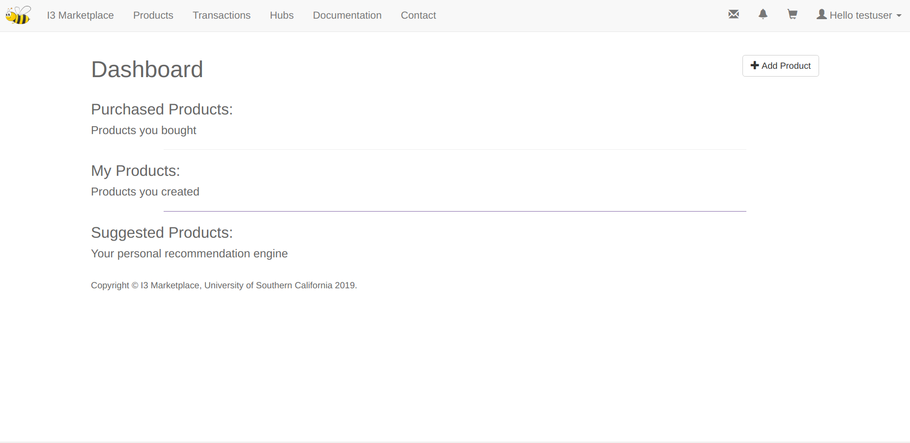

Buyer's Guide¶
Signup¶
All URLs of this platform require login, if you’re not logged in, you’ll be redirected to the login page. Sign up first before you log in. As indicted below, for now we haven’t enabled https, so please don’t use a password that’s the same as your other passwords.

The new users have to create an account by clicking "Don't have an account? Sign Up". A new user has to enter an username, email address, and password to set up an account.
Log in¶
After logging in, you’ll see a dashboard page, which consists of three parts -- purchased products, your products and suggested products. As is suggested by the hints, the “purchased products” are the products that you (as a buyer) bought, the “my products” are products that you (as a seller) created, and the “suggested products” are the products recommended for you according to your preferences (as of today, we don’t have it yet, and it just shows all products on the marketplace, except yours).
Apart from the above, the “add product” button on the up-right corner provides you with a quick way to create a product, but note that all products have to be created under existing hubs. So if you don’t have a hub yet, please register a hub first.
Products¶
The second field (up on the panel, right next to “I3 marketplace”) is called “products”. This page shows all the products on the marketplace, except the ones that you created. You can explore the market and buy products from here.
Product Detail¶
If you want to view the details of a product, just click the blue link. On this page you’ll see the full name, product creator and other information. Products are restricted or unrestricted (as shown in above figures). For restricted products, you have to require access to the product. Only after the product creator approves your purchase will you be able to subscribe to it. Of course he can deny it. You’ll get a notification when the seller makes a decision. For unrestricted products, you can just add to cart and check out. Another attribute of products is “sensor type”. Three choices are “sensor”, “actuator” and “both”. As a buyer, if you buy a sensor topic, you get a subscribe permission; if you buy a non-sensor topic, you get a publish-subscribe permission.
Subscribing Credential and Restricted Products¶
You’ll get your (personal, not specific to any product) 12-digit subscribing credential once you buy your first product. You will use it for ALL subscription requests (of course you still have to buy a product before you can subscribe to it). Below is what happens when you buy a restricted product (and if it’s the very first product you bought on the marketplace).
Now let’s log in as Matt and approve the purchase.
Map view¶
You can view products in both list and map (google map API key).
On any of the marks you can check out the details of a product.
REST API¶
All API endpoints require token authentication (auto generate when you click API key on up-right drop-down panel). Currently we only allow get query for products.
curl -X GET -H 'Authorization: Token {YOUR_API_KEY}' 'http://{HOST_IP}:{PORT}/api product/?{QUERY_NAME}={VALUE}&{QUERY_NAME}={VALUE}&...'
The above query parameters are using AND logic.
Allowed Query Params:¶
pk : return product with pk
name : return product with name
seller : get a list of products this guy sells
sensor_type : sensor, actuator or both
restricted_active : 0 for unrestricted products, 1 for restricted
hub : filter by hub name
description_contains : return products whose description contain your input query (such as air quality). NOTE: use %20 if you want to input space, eg air%20quality
search : return any product whose SELLER or HUB or NAME or DESCRIPTION contain your input search query
Rating¶
In the product detail page there’s a rating function as shown above. GET operation only requires login, while POST operation comes with mutiple permission check: * if request user is not logged in, return fail * if request user is creator of request product, return fail (You can't rate your own product) * if request user already rated the product, return fail (even if he bought it more than once) * everybody (except the seller) can rate the product (once and for all, only ONCE) * product rating have two values: Overall Rating (average by all raters) and Verified Rating (average by buyers). While now at my instance, the overall rating is displayed, we can switch to the mode that only display the average rating of those who actually bought the product. So even though everybody can rate, we can still keep track of the actual score (currently not fully supported though).